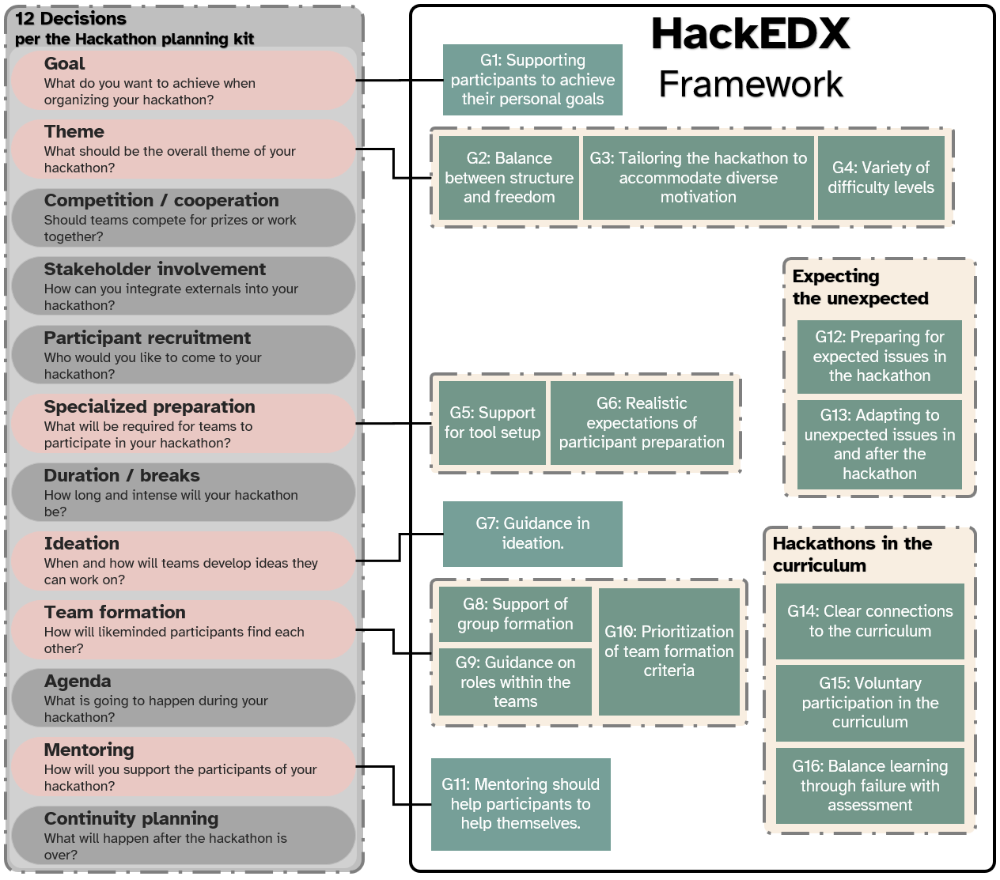

HackEDX (Hackathons as EDucational eXperiences)
I developed the HackEDX methodological framework as part of my dissertation at the University of Duisburg-Essen (2021--2025). The framework aims to support hackathon organizers and educators in designing and planning hackathons for learning.
On this website I present the resulting guidelines with abreviated reasoning. The full reasoning for the HackEDX (and a citable version) can be found in my to-be-published dissertation (that I will link here).
The HackEDX is an extension of the 12 decisions for hackathon organizers that are set in the Hackathon Planning Kit.
Affia-Jomants, A. O., Gama, K., Herbsleb, J. D., & Nolte, A. (2025). How to organize an in-person, online or hybrid hackathon—A revised planning kit (No. arXiv:2008.08025; Version 3). arXiv. https://doi.org/10.48550/arXiv.2008.08025
The navigation menu on the left links directly to individual decisions. Additionally, it includes links to external resources that were developed as part of the research, namely these are the repositories for a Participant toolbox
The figure below visualizes the framework and its connection to the 12 decisions.
